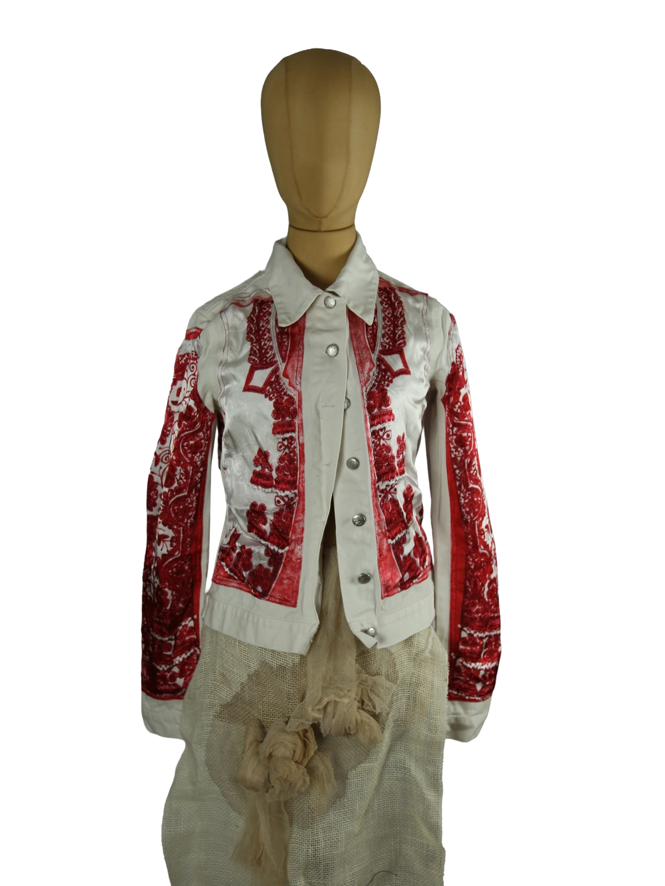

1 / 18Aus dem kuratierten Archiv von Disorder119. Diese Jacke von Jean Paul Gaultier zeigt die für das Haus typische Verbindung aus historischer Ornamentik und avantgardistischer Schnittführung. Auf hellem Grund entfalten sich tiefrote, barock anmutende Stick- und Printmotive, die sich über Front, Ärmel und Rücken ziehen und dem Stück eine starke visuelle Präsenz verleihen. Der taillierte Schnitt betont die Silhouette, während der klassische Kragen und die durchgehende Knopfleiste einen bewussten Bezug zur traditionellen Jackenform herstellen. Die Materialwirkung ist leicht und strukturiert zugleich, mit einer klaren Textur, die den kunstvollen Charakter des Designs unterstreicht. Ein ausdrucksstarkes Stück, das zwischen Modeobjekt und tragbarer Kunst positioniert ist. Details: Marke: Jean Paul Gaultier Farbe: Weiß / Rot Größe: 42 Passform: Tailliert Verschluss: Knopfleiste Material: Baumwollmischgewebe Herstellungsland: Unbekannt Fotografie & Passform: Das Kleidungsstück wurde auf unserer Standard-Schneiderpuppe fotografiert, die wir zur konsistenten Darstellung aller Kleidungsstücke verwenden. Maße der Schneiderpuppe: Brustumfang 89 cm Taillenumfang 66 cm Hüftumfang 89 cm Schulterbreite 38 cm Diese Maße dienen ausschließlich der visuellen Einordnung und werden nicht als Artikelmaße bezeichnet. Zustand: Gebraucht. Insgesamt guter Zustand mit alters- und nutzungsbedingten Gebrauchsspuren. Innen befindet sich eine kleine beschädigte Schlaufe, die keinen Einfluss auf die Tragbarkeit hat. Rechtliche Hinweise: Verkauf als gebrauchtes Kleidungsstück. Die Beschreibung erfolgt nach bestem Wissen und Gewissen. Farbnuancen und Oberflächenwirkungen können aufgrund von Lichtverhältnissen bei der Fotografie sowie unterschiedlicher Bildschirmdarstellungen leicht vom Original abweichen. Disorder119 steht für sorgfältig kuratierte Designerstücke mit Fokus auf Authentizität, Qualität und zeitlose Relevanz.
Shop-Kontakt noch nicht eingerichtet: WhatsApp-Nummer oder E-Mail-Adresse fehlen in SHOP_CONFIG (index.html).
Disorder119 · Kuratiertes Archiv für Designer-, Vintage- und Contemporary-Mode. Jedes Stück wird einzeln ausgewählt, fotografiert und beschrieben.